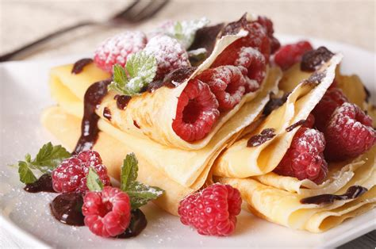

Basic Crepes

Description
A simple and delicious crepe recipe made with ingredients everyone has on hand.
Ingredients
- 1 cup all-purpose flour
- 2 eggs
- 1/2 cup milk
- 1/2 cup water
- 1/4 teaspoon salt
- 2 tablespoons butter, melted
Steps
- In a large mixing bowl, whisk together the flour and the eggs. Gradually add in the milk and water,
stirring to combine. Add the salt and butter; beat until smooth.
- Heat a lighlty oiled griddle or frying pan over medium heat. Pour or scoop the batter onto the griddle,
using approximately 1/4 cup for each crepe. Tilt the pan with a circular motion so that the batter
coats the surface evenly.
- Cook the crepe for about 2 minutes, until the bottom is light brown. Loosen with a spatula, turn and
cook the other side. Serve hot.